Graphical Model
- 8.1 Bayesian Networks
- 8.2 Conditional Independence
- 8.3 Markov Random Field
- 8.4 Inference in Graphical Models
A graph comprises nodes (also called vertices) connected by links (also known as edges or arcs).
In a probabilistic graphical model, each node represents a random variable (or group of random variables), and the links express probabilistic relationships between these variables.
- Bayesian networks (directed graphical models)
- Markov random fields (undirected graphical models)
- factor graph
Factorization properties of the joint distribution for a directed graphical model
\(\mathrm{pa}(x_i)\) denotes the set of parents of \(x_i\)
We call this directed factorization property. A graph describes a set of conditional independence properties.
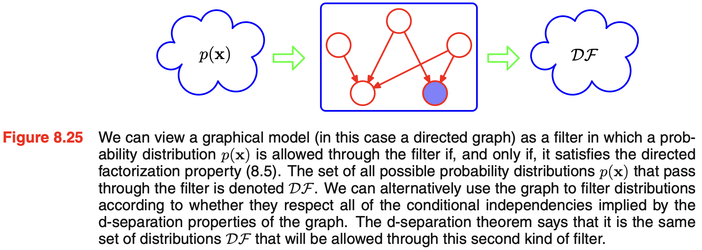
the set of distributions \(\mathcal{DF}\) will include any distributions that have additional independence properties beyond those described by the graph.
The more independence properties a distributions has, the harder it get filtered out.
Tip
Drawing graphical models
For this MkDocs site, use Graphviz/DOT for graphical models. It supports reusable node and edge defaults and plate-style clusters.
Bayesian network
digraph G {
rankdir=LR;
node [shape=circle, style=filled, fillcolor=white];
Cloudy -> Sprinkler;
Cloudy -> Rain;
Sprinkler -> WetGrass;
Rain -> WetGrass;
}This represents the factorization
The absence of links in the graph that conveys interesting information about the properties of the class of distributions that the graph represents.
8.3
Example
Make predictions for the target variable \(t\) given some new value of the input variable \(x\) on the basis of a set of training data comprising \(N\) input values \(\mathbf{x} = (x_1, \ldots, x_N)^T\) and their corresponding target values \(\mathbf{t} = (t_1, \ldots, t_N)^T\). In math, we wish to evaluate \(p(t \mid x, \mathbf{x}, \mathbf{t})\)
log liklihood is
we maximizing the log liklihood (MLE) w.r.t. \({\color{red}\mathbf{w}}\)
maximizing likelihood is equivalent, so far as determining \(\mathbf{w}\) is concerned, to minimizing the sum-of-squares error function.
Thus the sum-of-squares error function has arisen as a consequence of maximizing likelihood under the assumption of a Gaussian noise distribution.
Let's introduce a prior distribution over \(w\). Consider a Gaussian distribution (for simplicity)
Then as \(p(\mathbf{w} \mid \mathbf{x}, \mathbf{t}, \alpha, \beta) \propto p(\mathbf{t} \mid \mathbf{x}, \mathbf{w}, \beta) p(\mathbf{w} \mid \alpha)\)
Minimize \(p(\mathbf{w} \mid \mathbf{x}, \mathbf{t}, \alpha, \beta)\) is equivalent to minimizing \(\frac{\beta}{2} \sum_{n=1}^{N} \left\{ y(x_n, \mathbf{w}) - t_n \right\}^2 + \frac{\alpha}{2} \mathbf{w}^{\mathrm{T}}\mathbf{w}\)
plate: box surrounding a single representative node
digraph G {
rankdir=RL;
graph [fontname="Helvetica"];
node [fontname="Helvetica"];
edge [color=red, penwidth=3];
node [
shape=circle,
style=filled,
fillcolor=white,
color=red,
penwidth=3
];
w [label="w"];
tn [label=<t<SUB>n</SUB>>];
subgraph cluster_plate {
label="N";
color=blue;
penwidth=3;
tn;
}
w -> tn;
}- random variable denoted by open circles
- deterministic parameters denoted by smaller solid circles
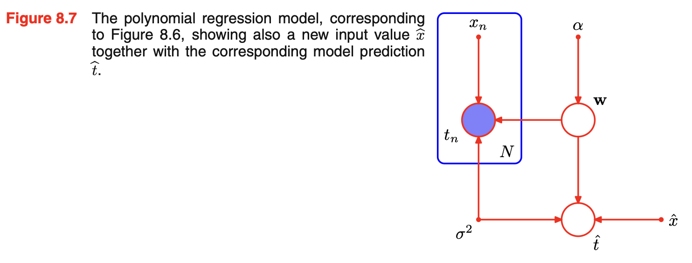
ancestral sampling: a way to generate samples from a probabilistic graphical model by sampling variables in causal/topological order: parents first, children later.
generative models: graphical models that capture the causal process
Discrete Variables
here \(\mathbf{x} = (x_1, x_2, \dots, x_K)\)
where
For arbitary joint distribution over \(M\) variables (each of which has \(K\) states), the parameters that must be specified is \(K^M-1\).
If all \(M\) variables are independent, the total number of parameters would be \(M(K-1)\).
Readers can see that we trade parameters for restricted class of distributions.
Number of parameters
how to reduce number of independent parameters:
sharing parameters + restrict distribution + use parameterized models for the conditional distributions
Linear-Gaussian models
Consider an arbitrary directed acyclic graph over D variables in which node \(i\) represents a single continuous random variable \(x_i\) having a Gaussian distribution. The mean of this distribution is taken to be a linear combination of the states of its parent nodes \(pa_i\) of node \(i\).
Thus by product rule
Since \(\mathbf{x} = (x_1, \ldots, x_D)\), \(p(\mathbf{x})\) is a multivariate Gaussian.
Since \(x_i\) conditioned on parents is a Gaussian distribution, we can express \(x_i\) as
Recursive expectation relation:
Recursive covariance relation:
a prior over hyperparameter: hyperprior
Conditional Independence
a is conditionally independent of b given c
equivalent to
d-separation criteria
tail-to-tail
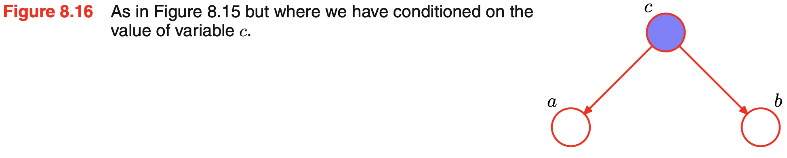
head-to-tail
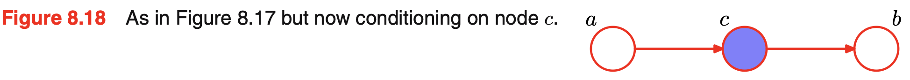
observe \(c\) "blocks" the path from \(a\) to \(b\)head-to-head
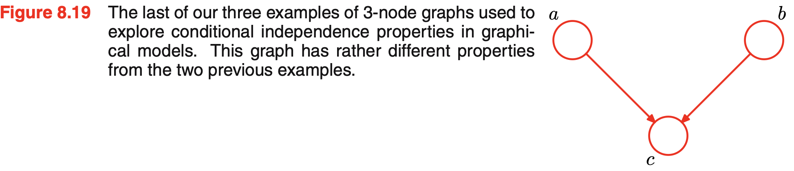
conditioning induce a dependencyWhen node c is unobserved, it ‘blocks’ the path, and the variables a and b are independent. However, conditioning on c ‘unblocks’ the path and renders a and b dependent.
For example, in the "Gauge, battery, fuel" example, \(\Pr(F=0 \mid G=0, B=0) < \Pr(F=0 \mid G=0)\). Observe no battery "explain away" no gauge.
Naïve Bayes
Naïve bayes model is a graphical structure arises in an approach to classification. We use independence assumption to simplify the model structure.
Observed input is \(\mathbf{x} = (x_1, \ldots, x_D)^T\) and we wish to classify it into \(K\) classes. We represent these \(K\) classes by 1-of-K encoding scheme (one-hot).
We can define a generative model by introducing a multinomial prior \(p(z \mid \mu)\) over the class labels, where kth component \(\mu_k\) of \(\mu\) is the prior probability of class \(C_k\), together with a conditional distribution \(p(\mathbf{x} \mid z)\) for observed vector \(\mathbf{x}\)
The key assumption is that conditioned on \(z\), the distribution of \(x_1, \ldots, x_D\) is independent. However, the marginal density \(p(x)\) will not factorize with respect to the components of \(\mathbf{x}\).
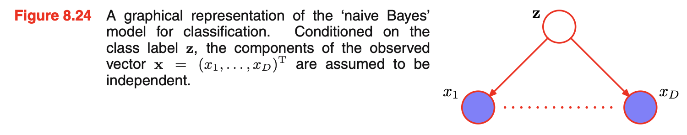
The only latent variable is usually the class label, so conditionally independent. But do not need to be identical distributed.
Naive Bayes is useful when
- \(D\) is high
- input vector \(\mathbf{x}\) contains both discrete and continuous variables
Markov blanket
The set of nodes comprising the parents, the children and the co-parents is called the Markov blanket, which is the minimal set of nodes that isolates \(x_i\) from the rest of the graph.
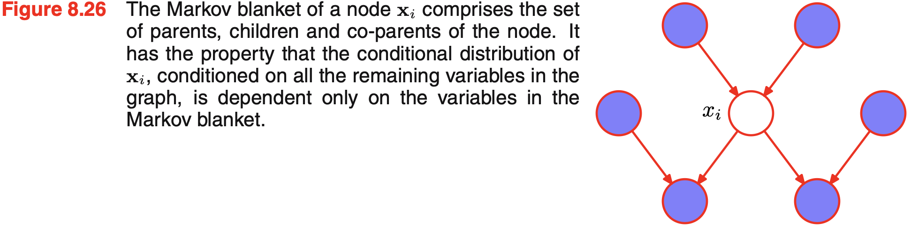
Markov Random Fields
A Markov random field, also known as a Markov network or an undirected graphical model
Denote a clique by \(C\) and the set of variables in that clique by \(\mathbf{x}_C\). The joint distribution is a product of potential function \(\psi_C(\mathbf{x}_C) \ge 0\) over the maximal cliques of the graph.
Here \(Z= \sum_\mathbf{x} \prod_C \psi_C(\mathbf{x}_C)\) is the partition function (normalization constant).
\(Z\) is needed for parameter learning as \(\nabla_\theta \log p(x;\theta)=\sum_C \nabla_\theta \log \psi_C(x_C;\theta)-{\color{blue}\nabla_\theta \log Z(\theta)}\)
\(Z\) is not needed in conditional distribution \(p(x_i\mid x_{-i})\)
No interpretation
We do not restrict the choice of potential functions to those that have a specific probabilistic interpretation as marginal or conditional distributions.
A potential function is an arbitary, nonnegative function over a maximal clique \(\mathcal{C}\).
Energy Function
| Potential Fucntion \(\psi_C\) | Energy Function \(E_C\) |
|---|---|
| how compatible a particular configuration of variables in that clique is. | a real-valued score of how undesirable or incompatible a configuration is |
Potential functions are often expressed using an energy function:
Therefore \(E_C(\mathbf{x}_C) = -\log \psi_C(\mathbf{x}_C)\) and \(p(\mathbf{x}) = \frac{1}{Z}\exp\left\{-\sum_CE_C(\mathbf{x}_C)\right\}\)
Define the total energy as \(E(\mathbf{x}) = \sum_C E_C(\mathbf{x}_C)\), then \(p(\mathbf{x}) = \frac{1}{Z}\exp\{-E(\mathbf{x})\}\).
Ising model
algorithm for finding high probability solutions
- ICM iterated conditional modes
- max-product algorithm
- graph cuts (global maximum)
8.13
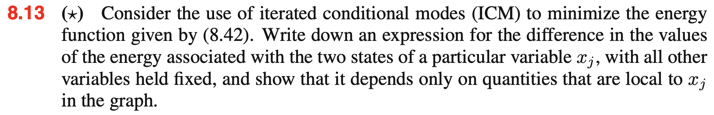
\(E(x, y) = h \sum_i x_i - \beta \sum_{\{i, j\}}x_i x_j - \eta \sum_i x_i y_i \quad (8.42)\)
for a particular variable \(x_j\), \(\Delta E = E_{x_j = 1} - E_{x_j = -1} = 2h -2\beta\sum_{i\in\mathrm{Neighbor}(j)}x_i -2\eta y_j.\)
8.14
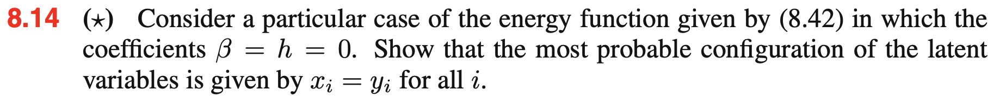
\(E(x, y) = - \eta \sum_i x_i y_i\). To make \(x_i y_i = 1\), we have \(\mathrm{sign}(x_i) = \mathrm{sign}(y_i)\)Relation to directed graphs
directed graph into undirected graph
Anachronistically, this process of ‘marrying the parents’ has become known as moralization, and the resulting undirected graph, after dropping the arrows, is called the moral graph. The process of moralization adds the fewest extra links and so retains the maximum number of independence properties.
It is important to observe that the moral graph in this example is fully connected and so exhibits no conditional independence properties, in contrast to the original directed graph. In going from a directed to an undirected representation we had to discard some conditional independence properties from the graph
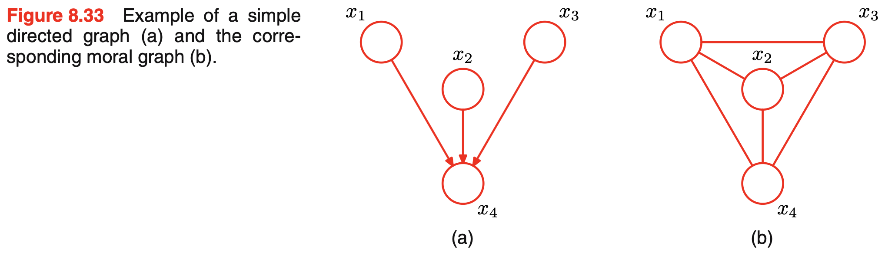
For a general DAG, \(\sum_{x_j} p(x_j\mid \operatorname{pa}(x_j)) = 1.\) so \(\sum_{\mathbf{x}}\prod_i p(x_i\mid\operatorname{pa}(x_i)) = \sum_{\mathbf{x}} p(\mathbf{x})=1.\) If we initialize every clique potential to 1 after moralization,
Then the undirected representation is $$ p(\mathbf{x}) = \frac{1}{Z} \prod_C\psi_C(\mathbf{x}_C) $$
With \(Z = \sum_{\mathbf{x}} \prod_C\psi_C(\mathbf{x}_C) = \sum_{\mathbf{x}}p(\mathbf{x}) = 1\)
A graph is said to be a D map (for ‘dependency map’) of a distribution if every conditional independence statement satisfied by the distribution is reflected in the graph.
If every conditional independence statement implied by a graph is satisfied by a specific distribution, then the graph is said to be an I map (for ‘independence map’) of that distribution.
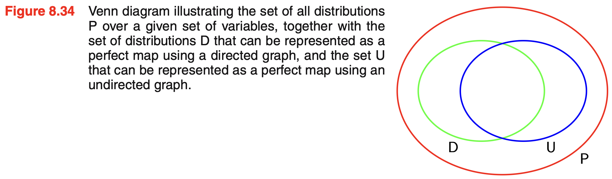
chain graphs
Inference
Chain
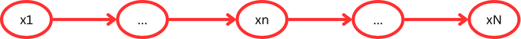
The marginal \(p(x_n)\) decomposes into the product of 2 factors times the normalization constant.
each of the messages comprises a set of K values, one for each choice of xn, and so the product of two messages should be interpreted as the point-wise multiplication of the elements of the two messages to give another set of K values.
This is a Markov chains
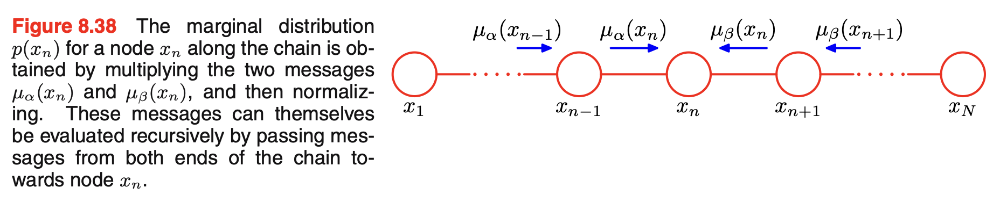
If some of the nodes in the graph are observed, then the corresponding variables are simply clamped to their observed values and there is no summation.
8.15
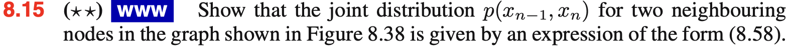
To obtain the joint marginal of two neighboring variables \(x_{n-1}\) and \(x_n\), sum out every other variable: $$ p(x_{n-1},x_n) = \sum_{x_1,\ldots,x_{n-2}} \sum_{x_{n+1},\ldots,x_N} p(x_1,\ldots,x_N). $$
8.18
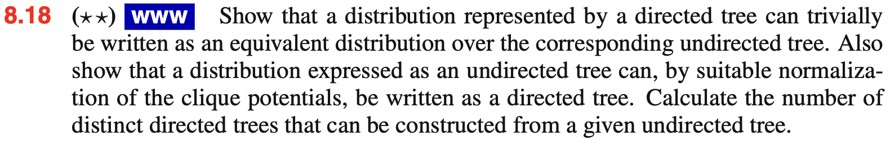
N
Factor graph
In a factor graph, there is
- a node (depicted as usual by a circle) for every variable in the distribution, as was the case for directed and undirected graphs.
- additional nodes (depicted by small squares) for each factor fs(xs) in the joint distribution.
- undirected links connecting each factor node to all of the variables nodes on which that factor depends.
factor graph
In a factor graph, variable nodes are never directly connected to other variable nodes. Likewise, factor nodes are never directly connected to other factor nodes.
Edges are only allowed between a variable and a factor.
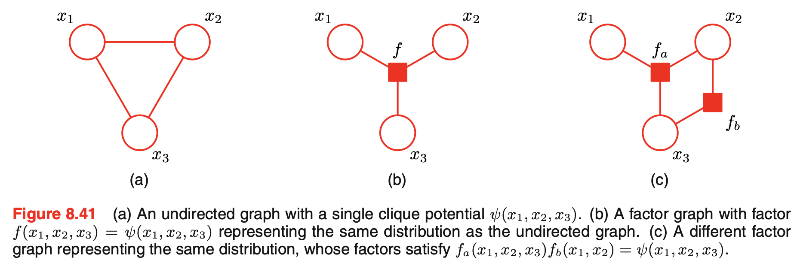
create additional factor nodes corresponding to the maximal cliques \(\mathbf{x}_s\).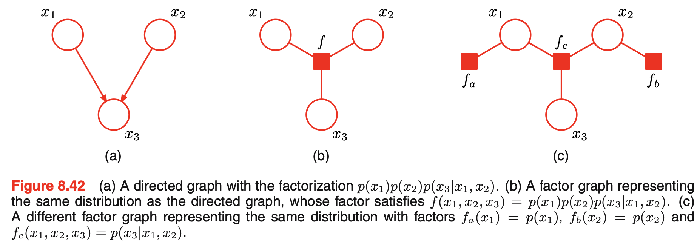
create factor nodes corresponding to the conditional distributionsmultiple different factor graphs can represent the same directed or undirected graph.
\(F_s\) and \(G_m\) are grouped subtree functions. They are not new nodes.
contribution of the whole subtree on the \(f_s\) side. \(X_s\) is the collection of all variables in the subtree on the \(f_s\)-side, excluding the variable \(x\) receiving the message.
messages from factor node \(f_s\) to variable node \(x\).
message from variable nodes to factor nodes
The result (8.66) says that to evaluate the message sent by a factor node to a variable node along the link connecting them,
- take the product of the incoming messages along all other links coming into the factor node
- multiply by the factor associated with that node
- marginalize over all of the variables associated with the incoming messages
Target: evaluate marginal \(p(x)\).
- initial \(x\) as the root of the graph, initialize message at leaves of the graph by \(\mu_{x \rightarrow f}(x) = 1\) and \(\mu_{f \rightarrow x}(x) = f(x)\)
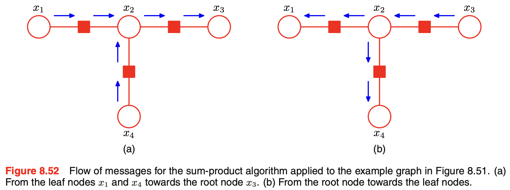
Outward pass: root to leaves
After the outward pass, every edge has carried two messages: $$ x\to f \qquad\text{and}\qquad f\to x. $$
8.20
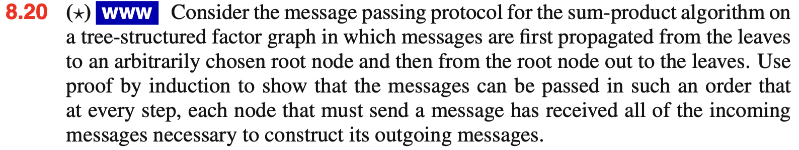
This is a tree-structured factor graph. \(p(x) = \prod_{s \in \operatorname{ne}(x)}\mu_{f_s \to x}(x)\)
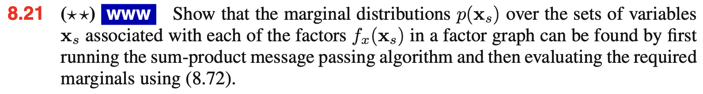
For a Bayesian network, the joint \(p(\mathbf{x}) = \prod_i p(x_i \mid \operatorname{pa}(x_i))\) is a product of normalized conditionals, so it is already normalized and the marginals from sum-product need no further normalization.
For an undirected graphical model, we start from an unnormalized product of potentials:
Computing \(Z\) directly is expensive: the sum runs over every joint assignment.
Running sum-product on \(\widetilde{p}(\mathbf{x})\) gives an unnormalized marginal:
Summing it over \(x_i\) alone recovers \(Z\), since \(\sum_{x_i}\widetilde{p}(x_i) = Z\sum_{x_i}p(x_i) = Z\). Hence
This is efficient: we normalize over a single variable instead of the entire joint state space.
Z
For example, if \(x_i\) is binary and sum-product gives \(\widetilde{p}(x_i=0)=6\) and \(\widetilde{p}(x_i=1)=4\), then \(Z = 10\), so \(p(x_i=0)=0.6\) and \(p(x_i=1)=0.4\). The same \(Z\) applies to all marginals, since they all come from the same unnormalized joint.
Max-sum
find a setting of the variables that "jointly" has the largest probability and to find the value of that probability
individually & jointly
run the sum-product algorithm to obtain the marginals \(p(x_i)\) for every variable, and then, for each marginal in turn, to find the value \(x_i^*\) that maximizes that marginal will not return \(\mathbf{x}^{\max}\).
8.27
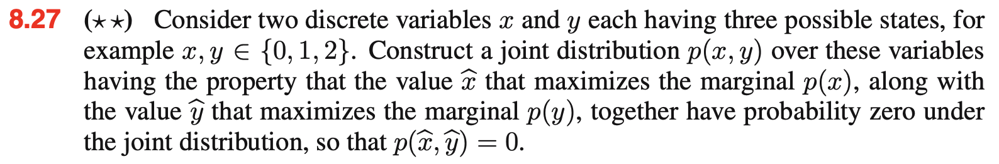
| 0 | 1 | 2 | |
|---|---|---|---|
| 0 | 0 | 0.4 | 0 |
| 1 | 0.4 | 0 | 0.1 |
| 2 | 0 | 0.1 | 0 |
For the chain, we can use algorithm \(x_{n-1}^{\max}=\phi(x_n^{\max})\) (back-tracking)
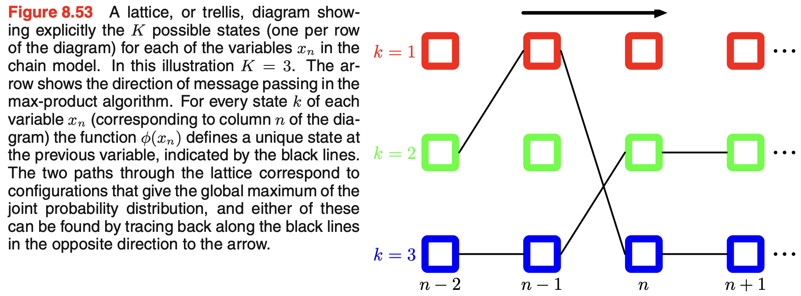
8.29
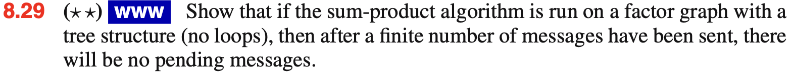
a (variable or factor) node \(a\) has a message pending on its link to a node \(b\) if node \(a\) has received any message on any of its other links since the last time it send a message to \(b\).
For graphs that have a tree structure, any schedule that sends only pending messages will eventually terminate once a message has passed in each direction across every link.